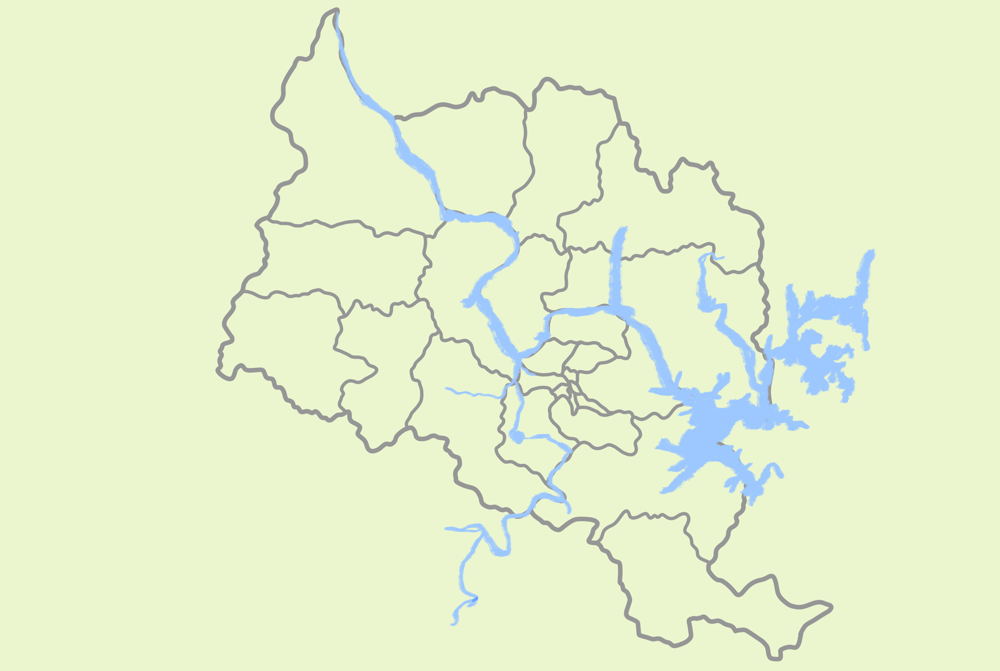

설화 속 충주,
지도에서 만나자!

전체
소금호수의 전설
돗가비
달천강 용과 얼룩소
성벽에 핀 연꽃
쌍효각
소년 임경업과 이무기
용이 사는 마을
범바위
장자늪 이야기
부채고개
대문산 이야기
목계솔밭
꼬꼬바위
검둥개
계명산
학바위
형제바위
장미산성 남매장수이야기
재오개 아기장수
마의태자와 덕주옹주
암소바위
남산성
광부처거리
달래강
천등산
부흥사 돌탑
법경대사 지등탑 비의 조성 설화
탄금대에 오르면 가야금소리가 들려
따신 물 이야기
허적과 도깨비
인물
소년 임경업과 이무기
탄금대에 오르면 가야금소리가 들려
마의태자와 덕주옹주
대문산 이야기
장미산성 남매장수이야기
재오개 아기장수
허적과 도깨비
문화재
쌍효각
남산성
부흥사 돌탑
법경대사 지등탑 비의 조성 설화
동물
용이 사는 마을
달천강 용과 얼룩소
꼬꼬바위
범바위
암소바위
도술
돗가비
성벽에 핀 연꽃
학바위
형제바위
천등산
장소[터전]
검둥개
부채고개
광부처거리
달래강
소금호수의 전설
목계솔밭
계명산
장자늪 이야기